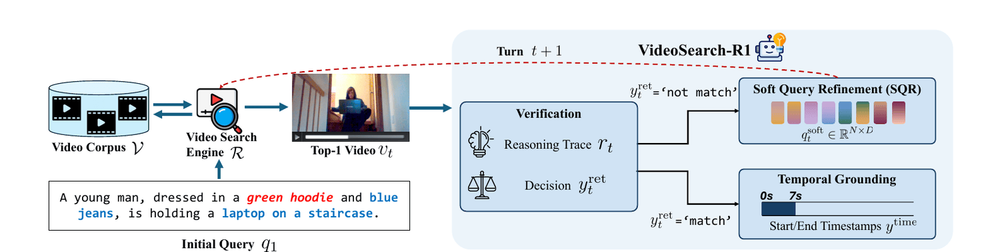
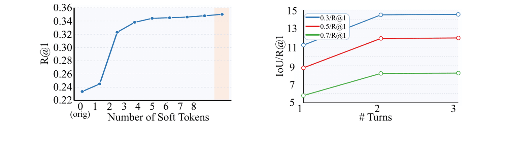
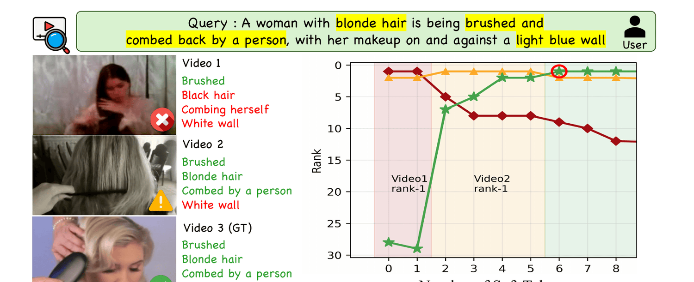
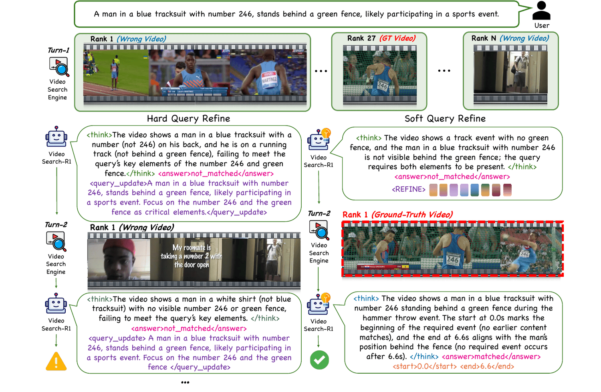

An agentic framework that unifies inter-video retrieval and intra-video reasoning through multi-turn interaction with a video search engine.
As video corpora continue to expand in both scale and task complexity, there is increasing demand for approaches that retrieve relevant videos from large-scale corpora (inter-video reasoning) and subsequently perform fine-grained, query-conditioned tasks (intra-video reasoning) within the retrieved content, such as temporal grounding. However, existing approaches typically treat retrieval as a preprocessing step, so when the initial retrieval fails there is no mechanism to refine the search, leading to the failure of subsequent fine-grained reasoning. Moreover, recent agentic frameworks typically assume the query-relevant video is already given, thereby bypassing retrieval. To address these limitations, we propose VideoSearch-R1, an agentic framework for iterative video retrieval and reasoning through multi-turn interaction with a video search engine. We introduce Soft Query Refinement (SQR) to refine search query tokens in a continuous latent space rather than rewriting queries in the discrete text space, enabling more efficient and fine-grained adjustments. SQR and its reasoning process are trained with Group Relative Policy Optimization (GRPO), guided by task-level rewards derived from retrieval and downstream tasks. VideoSearch-R1 achieves state-of-the-art performance across three datasets on Video Corpus Moment Retrieval (VCMR), while requiring significantly fewer generated tokens than explicit text-level query refinement.
VideoSearch-R1 iteratively retrieves candidate videos via a search engine, verifies query–video matching, refines the query, and performs intra-video reasoning—all through multi-turn interaction.
Instead of rewriting queries as text, SQR generates soft query tokens in a continuous latent space for fine-grained refinement, using 8 latent tokens versus 26.8 text tokens for hard refinement.
By jointly optimizing inter-video retrieval and intra-video reasoning with GRPO, VideoSearch-R1 sets a new state of the art on three VCMR benchmarks in both retrieval and temporal grounding.

q₁,
the model retrieves the top-1 video from a corpus and performs verification, producing a reasoning trace
rₜ and a matching decision yₜᵣᵉᵗ. If
‘not match’, it performs SQR by generating soft query tokens
qₜˢᴡᶠᶏ to form a refined query
qₜ₊₁ = [qₜ ‖ qₜˢᴡᶠᶏ]; if
‘match’, it conducts temporal grounding to predict the start and end timestamps.
Query the video search engine (Qwen3-VL-Embedding-2B) and return the top-1 candidate from a large-scale corpus.
Reason over the retrieved video and decide match / not match, emitting a reasoning trace.
If not matched, generate N=8 soft query tokens in latent space and append them to the original query.
On a match, predict the precise start and end timestamps of the query-relevant moment.
Soft vs. hard query refinement. Unlike hard refinement, which rewrites queries in the discrete text
space, SQR generates continuous soft query tokens appended to the original query for fine-grained adjustment,
trained with an InfoNCE retrieval objective ℒret that provides
richer discriminative supervision than next-token prediction—reaching superior retrieval with just
8 latent tokens instead of 26.8 rewritten text tokens.
Two-stage training. A Supervised Fine-Tuning cold start (from Qwen3-VL-2B-Instruct) initializes
a structured reasoning template and meaningful soft query tokens—optimizing a verification loss, a
temporal-grounding loss, and the InfoNCE retrieval loss ℒret that
supervises the otherwise-unlabeled soft tokens against negative videos. GRPO reinforcement learning
then explores reasoning trajectories under four complementary rewards—format, verification,
retrieval (Rret=exp(−ℒret)), and
temporal grounding (IoU)—propagating reward across both inter-video retrieval and intra-video
reasoning for holistic optimization.
| Method | VCMR (IoU/R@1) | VER | VR | ||
|---|---|---|---|---|---|
| 0.3 | 0.5 | 0.7 | Acc | R@1 | |
| Charades-FIG | |||||
| CONQUER | – | 1.2 | 0.7 | – | 2.8 |
| SQuiDNet | – | 2.6 | 0.9 | – | 11.7 |
| Qwen3-VL-2B (ZS) | 12.2 | 7.2 | 2.9 | 30.0 | 21.6 |
| Qwen3-VL-2B (FT) | 12.9 | 10.4 | 7.2 | 74.7 | 21.6 |
| VideoSearch-R1 | 16.5 | 13.4 | 8.2 | 75.7 | 24.6 |
| DiDeMo-FIG | |||||
| CONQUER | – | 5.5 | 3.7 | – | 14.8 |
| SQuiDNet | – | 2.9 | 0.5 | – | 16.9 |
| Qwen3-VL-2B (ZS) | 22.0 | 10.6 | 4.0 | 62.8 | 54.8 |
| Qwen3-VL-2B (FT) | 23.6 | 22.1 | 16.7 | 73.1 | 54.8 |
| VideoSearch-R1 | 33.3 | 30.2 | 19.7 | 74.6 | 59.0 |
| ActivityNet-FIG | |||||
| CONQUER | – | 3.0 | 1.6 | – | 13.5 |
| SQuiDNet | – | 4.7 | 2.1 | – | 32.6 |
| Qwen3-VL-2B (ZS) | 17.2 | 10.1 | 5.8 | 63.0 | 55.1 |
| Qwen3-VL-2B (FT) | 29.1 | 19.2 | 11.4 | 83.1 | 55.1 |
| VideoSearch-R1 | 33.8 | 22.3 | 12.3 | 83.3 | 61.1 |
Scroll horizontally to see all columns
VideoSearch-R1 iteratively refines the query via SQR, lifting video retrieval despite using the same search engine—and consistently improving VCMR and verification over zero-shot and fine-tuned baselines.
Soft tokens incrementally steer the query embedding toward the target video; a couple of refinement turns suffice.

T=3, so a small number of refinement turns balances accuracy and cost.


@inproceedings{lee2026videosearchr1, title = {VideoSearch-R1: Iterative Video Retrieval and Reasoning via Soft Query Refinement}, author = {Lee, Seohyun and Choi, Seoung and Ko, Dohwan and Kim, Jongha and Kim, Hyunwoo J.}, booktitle = {European Conference on Computer Vision (ECCV)}, year = {2026} }